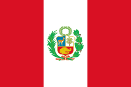
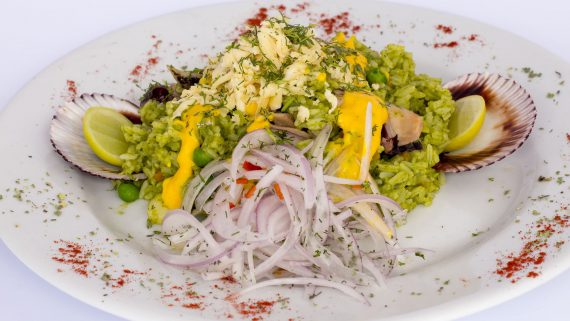
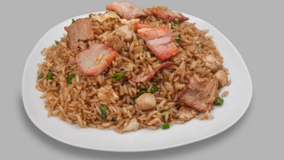
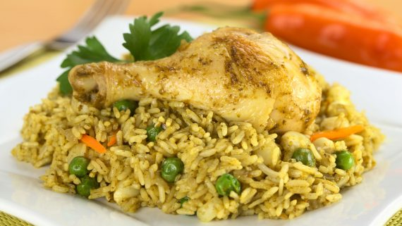

Hola bienvenidos al menu de platillos de Peru.
Platillo |
Imagen |
Informacion |
| 1-Arroz a la chiclayana. |
 |
El nombre a la chiclayana procede de la ciudad donde este plato se creó: Chiclayo, al noroeste de Perú. Chiclayo es una de las ciudades más populares en la que disfrutar de la gastronomía peruana en toda su esencia. En concreto, la receta de arroz a la chiclayana puede hacerse con pollo, pato o cualquier otro tipo de carne. Entre los ingredientes imprescindibles se encuentra el zapallo loche rallado, arvejas verdes, chicha de jora o cerveza negra y atado de cilantro. |
|
2-Arroz chaufa peruano.
|  |
La receta de arroz chaufa se encuentra entre los imprescindibles de la gastronomía peruana. Consiste en arroz frito mezclado con diversos tipos de carne y salsa de soja. En realidad, el plato está basado en la gastronomía china, puesto que fue traído al país por los cocineros chinos que fueron afincándose en el país a partir del siglo XIX. Los peruanos empezaron a hacer referencia a la comida cantonesa que estaba introduciéndose en el país bajo el término de chifa, origen de la denominación chaufa que da nombre a este plato de arroz. En definitiva, el arroz chaufa es el resultado de la fusión entre la comida china y la peruana que tuvo lugar en aquel momento. |
|
3-Arroz con pollo peruano.
|
 |
Por simple que pueda parecer el nombre, el arroz con pollo es una receta tradicional peruana. De aspecto verde, es un plato muy sabroso debido a la variedad de ingredientes que incluye. Así, va aderezado con una zarza de cebollas, lo que potencia el sabor en gran medida. El arroz con pollo que se cocina en Perú posee muchas similitudes con la famosa paella valenciana, uno de los símbolos por excelencia de la cocina española. En Ecuador, existe el llamado arroz amarillo, un plato muy original en el que el color amarillo del arroz se consigue mediante el uso de achiote. En Colombia, se conoce como arroz con pollo deshilachado. En Perú, a este plato tan internacional se le añade cilantro, uno de los ingredientes más empleados en la cocina peruana. Además, el cilantro tiñe el plato de un color ligeramente verdoso, lo que marca la diferencia con respecto al arroz con pollo consumido en otros países. |